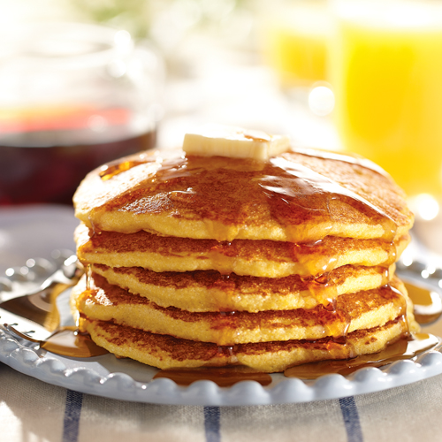

Corbread Pancakes

Description
These pancakes are requested regularly by my family for breakfast. The recipe is easy to throw together and the taste is yummy!
Ingredients
- 3/4 cup of all-purpose flour
- 3/4 cup cornmeal
- 2 tablespoons white sugar
- 1/2 teaspoon baking powder
- 1/2 teaspoon baking soda
- 1/2 teaspoon salt
- 1 1/4 cups buttermilk
- 2 large eggs
- 3 tablespoons butter, melted, and cooled
Step 1
- Whisk flour, cornmeal, sugar, baking powder, baking soda, and salt in a large bowl. Whisk buttermilk, eggs and butter in a separate large bowl. Stir the liquid mixture into the dry mixture until blended and smooth.
Step 2
- Heat a lightly oiled griddle or skillet over medium-high heat. For each pancake, pour 1/4 cup batter on griddle and cook until browned, about 1 1/2 minutes. Flip and cook until browned on the other side, about 1 minute. Continue with remaining batter.